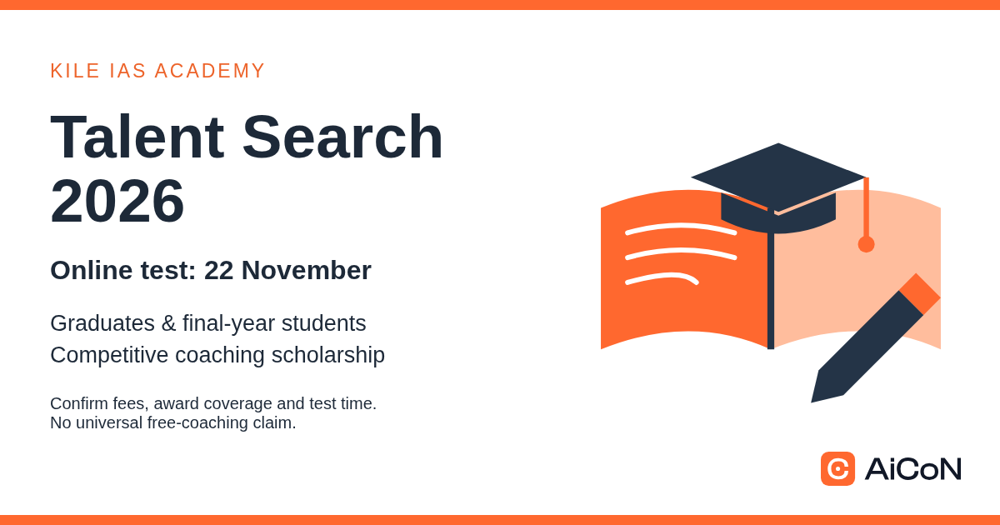
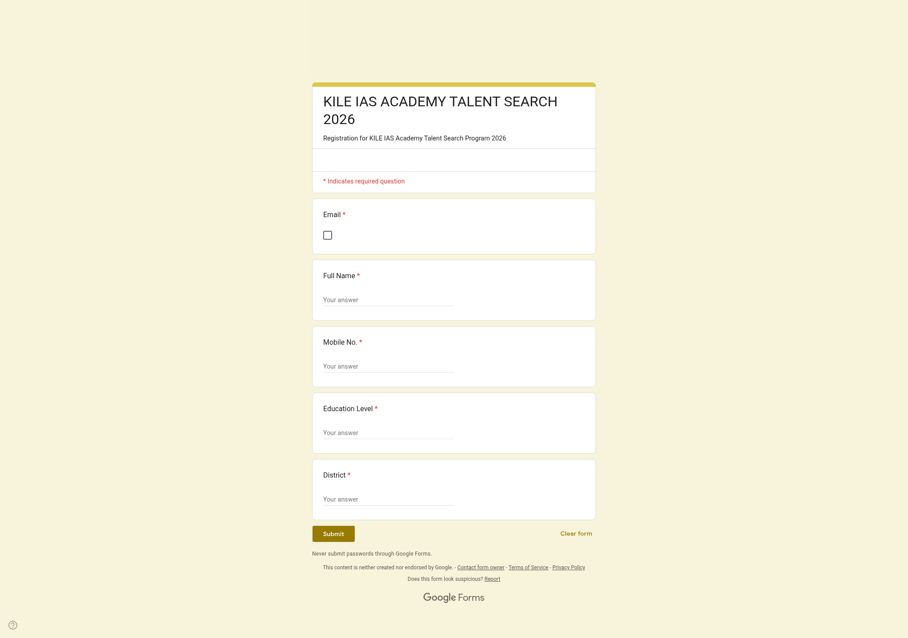

KILE IAS Academy Talent Search 2026: online test on 22 November
Graduates and final-year degree students preparing for UPSC Civil Services can explore KILE IAS Academy's Online Talent Search Test 2026. The current academy notice says top students will receive a 100% scholarship for its UPSC coaching programmes. The Kerala government announcement confirms an online examination on 22 November for the academy's 2027-28 batch.
The current notice does not state how many scholarships will be awarded, a rupee value, the exact covered course or whether books, accommodation, travel and other costs are included. We did not find an explicit examination-fee statement, registration closing date, test time or syllabus in that notice or the blank form. Confirm these points with the academy before relying on an award or making plans.

What is verified?
- Exam: KILE IAS Academy Online Talent Search Test 2026.
- Date and mode: Sunday, 22 November 2026, online. The notice does not give the clock time.
- Who the current PDF names: graduates and final-year degree students, including serious UPSC aspirants preparing for CSE 2027 and later attempts.
- Benefit: the PDF promises a 100% scholarship for top students for UPSC coaching programmes. It also mentions free expert guidance and mentorship.
- Registration: the official academy page links a 2026 PDF whose embedded registration link opens a current Google Form.
This is not a UPSC recruitment application, a government job offer, guaranteed admission or a cash scholarship paid to every registrant. Selection and later admission remain the academy's decision.
Check eligibility and course fit before registering
The current talent-test PDF addresses aspirants across Kerala and beyond. The academy's general page says its priority is dependents of organised and unorganised workers in Kerala, with some seats available to the public after that priority. We have not verified how those admission priorities apply to this specific test's scholarship allocation. If your eligibility depends on worker-dependant status, residence or an admission category, ask the academy rather than assuming that opening the form settles it.
The government announcement calls this the test for the 2027-28 academy batch; the PDF describes UPSC CSE 2027 and future attempts. These are different labels, not a promise that every coaching course prepares for a particular exam date. Confirm the course, teaching mode, duration, location, attendance conditions and scholarship terms that would apply to you.
How to reach the real registration form
- Open the official KILE IAS Academy page linked below. Find its Online Talent Search Test 2026 section and download the current PDF.
- Follow the registration hyperlink inside that PDF. Its short link is forms.gle/zfZxKKik9t8GmjF36. Read the form title and year before entering anything. If copying from an OCR/text extraction, check the original link: one character can send you to an invalid form.
- Check which Google account is shown. The inspected form has a required email-recording checkbox. Use an account you control and can access for later communication, not someone else's saved account.
- Enter the fields shown on the blank form: full name, mobile number, education level and district. All are marked required. Give your real current education status.
- Review the information and any changed instructions before submitting. Only submit if the eligibility and data-sharing terms are acceptable to you. We did not submit, test confirmation or establish whether editing or withdrawal is supported.

The blank form we inspected shows no payment control or document-upload question. That alone is not proof that all later stages are fee-free or that no proof of age, qualification or status will be required. Do not send identity scans, a password or an OTP to an unofficial helper. Follow the link from the current official academy page rather than a forwarded look-alike form.
Ask the academy these questions
- What is the last date and time to register, and when will the test link and schedule be sent?
- Is there any examination or registration fee? What are the test duration, syllabus, question pattern and device requirements?
- How many students receive a 100% scholarship? Which course and fees does it cover, and what remains payable?
- Do worker-dependant priority, residence, age or other admission conditions affect the talent-test scholarship?
- Are classes online or in person, and what are the attendance, renewal, exit or repayment conditions?
Official talent-test contact in the PDF: 8075768537 and kileiasacademy@gmail.com. The Kerala government announcement also lists 0471-2479966. We have not called or emailed on anyone's behalf.
Official sources
- KILE IAS Academy page: current talent-test PDF and general academy admission priorities.
- Official Online Talent Search Test 2026 PDF: date, named audience, scholarship wording and registration link. The upload directory is older; the document itself is labelled 2026.
- Kerala government announcement: 22 November online exam and academy batch reference.
No reliable English or Malayalam step-by-step video for this exact registration was verified. This guide uses the current official notice and observed blank form. AiCoN independent qualified guide, checked 18 November 2026. Not a government publication, scholarship decision or proof of successful registration. Follow the academy's latest instructions.